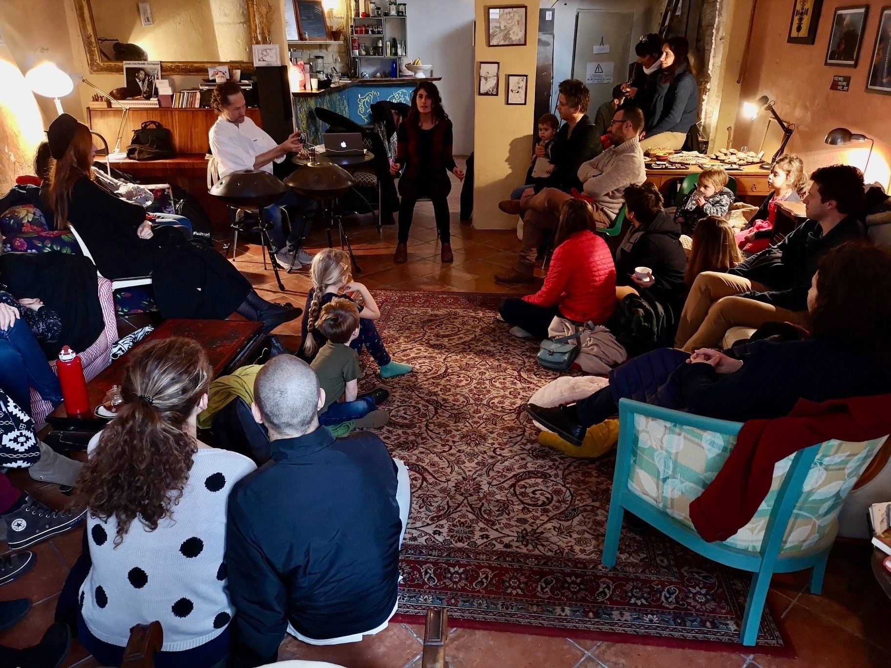

"Les fameuses histoires de Nasreddin Hoca et autres contes insolites"

Découvrez ou redécouvrez les aventures du légendaire Nasreddin ; espiègle, déroutant et drôle. Derrière le rire, des vérités simples et lumineuses comme le jour. Accompagné de deux autres contes insolites et loufoques, pour passer un moment agréable ensemble.
Pour tous.tes, dès 6 ans.
Durée: 1h
"Balades de la Mésopotamie à Samarcande"
Quand le destin impose le Trois contes initiatiques en mouvement de la Mésopotamie à Samarcande où les personnages sont en quête d’un destin qui leur cache bien des surprises.
Pour tous.tes, dès 7 ans.
Durée: 1h
"Amour, gloir et courage"

Cinq contes internationaux qui vous transporteront au rythmes de leurs
émotions. Du rire aux larmes, ils sauront vous charmer par leur courage,
leur folie qui forme un bon résumé de la vie.
Pour tous.tes, dès 7 ans.
Durée: 1h